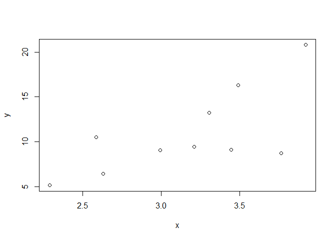

Introdução
set.seed(1823)
## R code
x <- rnorm(10, 3, 1)
e <- rnorm(10, 0, 3)
y <- 1 + 3 * x + e
plot(y ~ x)

## R code
sd <- function(x) {
mean(x)
}
m = "hola"
BLA BLA BLA BLA
## Python code
sum([1, 2, 3, 4, 5])
15
Estou aqui de novo para mais uma #dicarapida sobre um assunto que é bastante importante, mas muita gente esquece ou não faz de forma correta, que são as Meta Tags Sociais.